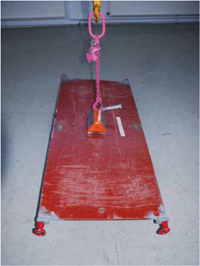
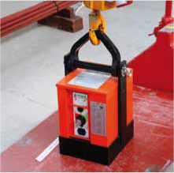

Magnete sind bewährte kraftschlüssige Lastaufnahmemittel zum Transport magnetisierbarer Werkstücke, es dürfen damit jedoch keine gefährlichen Güter, wie Druckgasflaschen oder radioaktive Stoffe, transportiert werden.
Es gibt sie als handbetätigte Hubmagnete (Bild 17-1) und Batteriemagnete, z. B. zur Maschinenbestückung (Bild 17-2) oder als netzabhängige Lasthebegeräte, auch mit Stützbatterie. Die Erschöpfung der Batterie wird mit einer selbsttätig wirkenden Warneinrichtung, z. B. durch Blinken und/oder akustisch angezeigt. Der Anschläger muss mit diesen Warnzeichen vertraut sein, um ggf. sofort die Last abzusetzen. Bei Ausfall der Energie fällt die Last!
Kraftschlüssig angeschlagene Lasten dürfen nie über Personen hinweggeführt werden. Blechplatten können segeln und andere Werkstücke können durch Anstoßen oder anschließendes Abgleiten von der Maschine den Maschinenbeschicker verletzen.

Bild 17-2: Batterie-Lasthebemagnet
Damit sich Personen so weit von der Last entfernt aufhalten können, dass sie nicht mehr gefährdet sind, werden funkgesteuerte Magnete eingesetzt. Ebenso reduziert eine kabelgesteuerter Lasthebemagnet die Gefahr, getroffen zu werden.

Bild 17-2: Batterie-Lasthebemagnet
Die Tragfähigkeit hängt vom magnetischen Feld ab, das eine kurze Zeit zum Aufbau benötigt. Dicke und Form der Last sowie Oberfläche beeinflussen die Tragfähigkeit; bei zunehmender Temperatur sinkt die Haltekraft.
Als Beispiel aus der Bedienungsanleitung eines Batteriemagneten sei genannt:
| Abreißkraft nach VDE 0580 | 5.400 kg | |
| Traglast | Stahl flach | 3.000 kg |
| Stahl rund | 1.500 kg | |
| Stahlguss flach | 1.800 kg | |
| Stahlguss rund | 900 kg | |
Die Angaben finden sich häufig zusätzlich zur Bedienungsanleitung in vereinfachter Form am Gehäuse.
Für neue Lasthebemagnete entsprechend DIN EN 13155 „Krane — Sicherheit — Lose Lastaufnahmeeinrichtungen“ gilt, dass das Lösen der Last über eine Steuerung mit Zweifachbetätigung erfolgen muss.
Dies ist nicht erforderlich in abgesicherten Bereichen und wenn das Lösen der Last vor dem Absetzen der Last nicht möglich ist. Die Form der Magnete muss derjenigen der aufzunehmenden Lasten angepasst sein.
Warneinrichtungen und Stützbatterie sind wie bisher erforderlich, um für mindestens 10 Minuten das Halten zu ermöglichen. Dies ist nicht erforderlich in abgesicherten Bereichen, d. h. wenn sich dort keine Personen aufhalten können.
Die Anforderungen an die Warneinrichtung und Stützbatterie entfallen, wenn der Hersteller in der Betriebsanleitung und durch Kennzeichnung das Heben des Flächenschwerpunktes der Pole über 1,80 m hinaus untersagt und die Masse der Last geringer als 20 kg ist. Dies wird durch ein Schild am Magneten gezeigt.
Bei Lasthebemagneten mit Störaussendungen, die Personen mit Herzschrittmacher gefährden können, ist die Nennfeldstärke für mindestens eine Entfernung anzugeben. Messergebnisse an netzbetriebenen großen Magneten ergaben z. B. einen Mindestabstand von 2,5 m für Personen mit elektronischen Organprothesen.